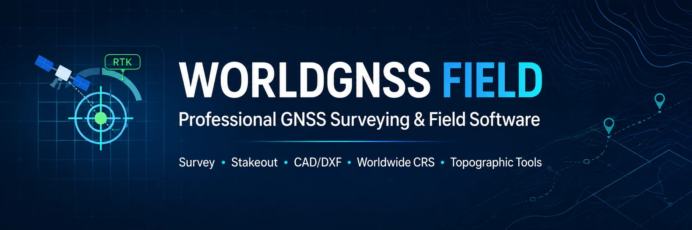
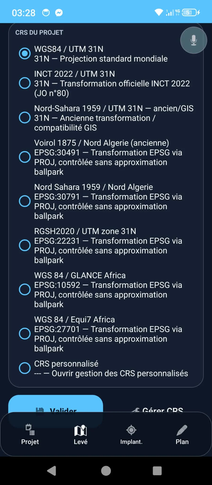
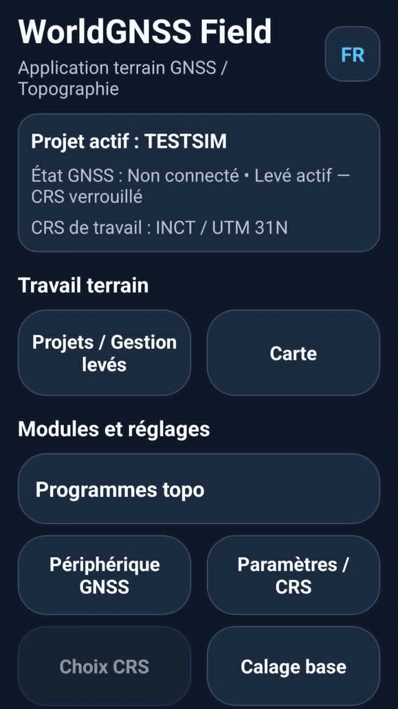
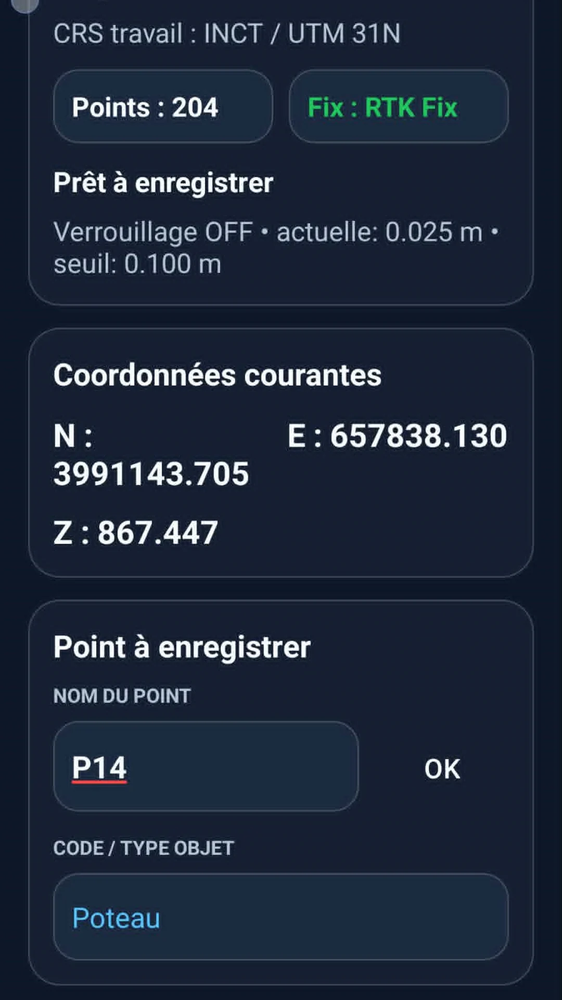
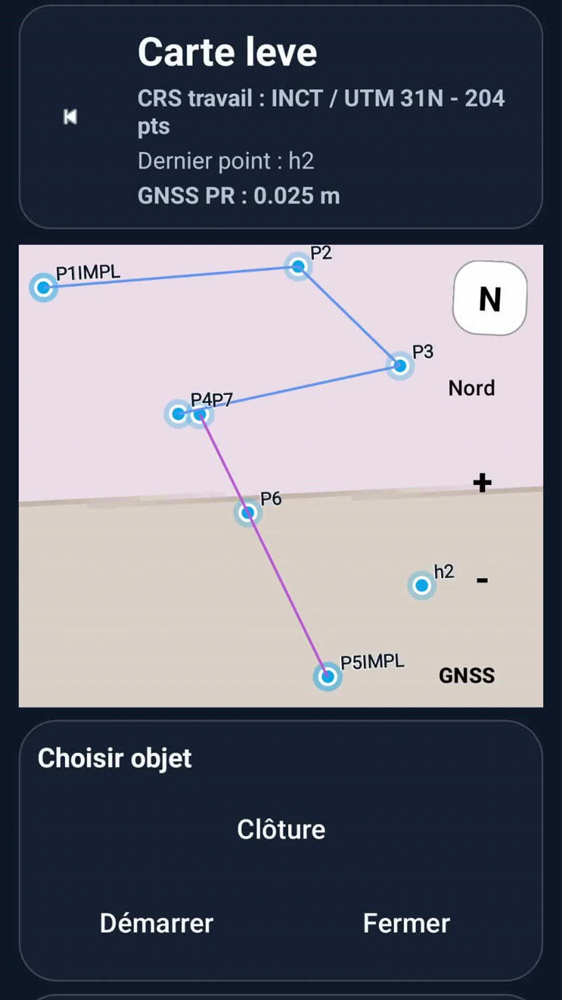
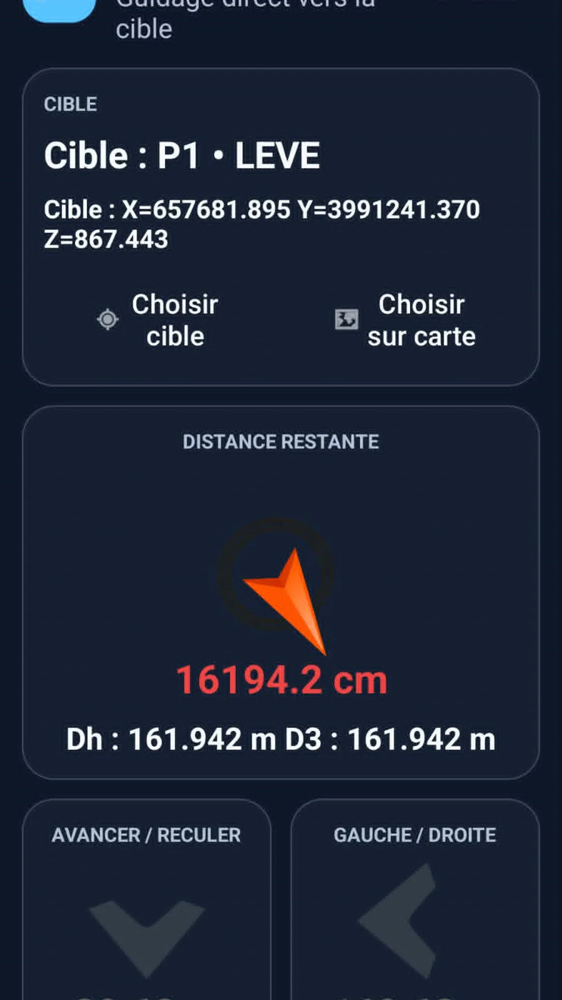
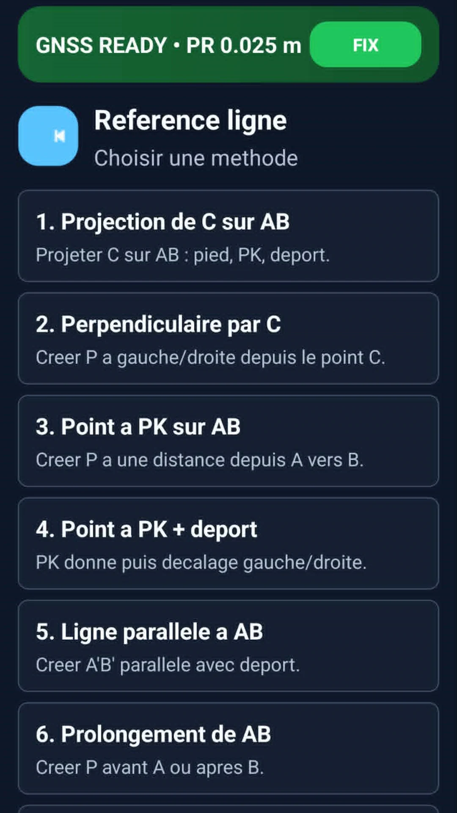
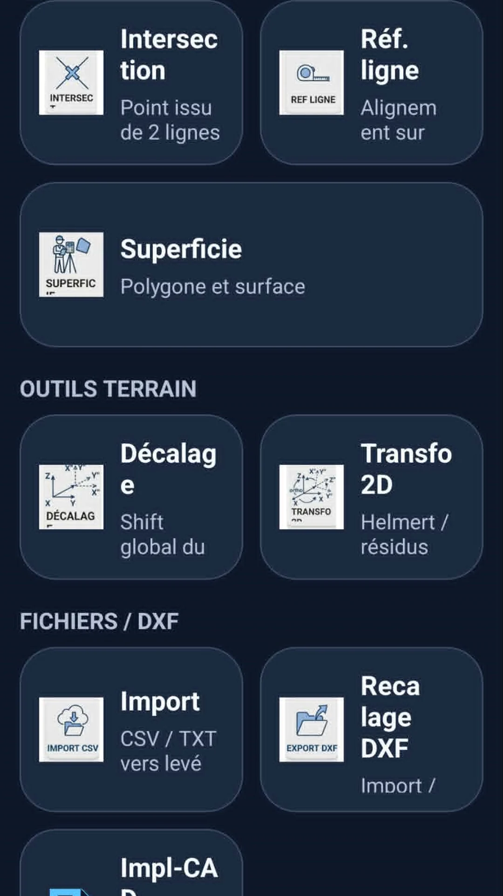

📍
الرفع GNSS
تسجيل النقاط والعمل ضمن سير عمل GNSS/RTK.
يتطور WorldGNSS Field ويصبح NTRIP-RTK - GNSS Topographie. نفس منصة الرفع GNSS الاحترافية على أندرويد تواصل مسيرتها تحت الاسم الجديد.
تطبيق احترافي لأعمال الرفع GNSS/RTK والعمل الميداني، موجه للمساحين ومختصي الجيوماتكس ومستخدمي GNSS حول العالم.

يجمع NTRIP-RTK - GNSS Topographie، المعروف سابقاً باسم WorldGNSS Field، العمليات المساحية العملية في بيئة متنقلة واحدة، مع استخدام WGS84 كمرجع جغرافي وإسقاط الإحداثيات في نظام الإحداثيات المختار للمشروع.
تسجيل النقاط والعمل ضمن سير عمل GNSS/RTK.
توجيه ميداني مباشر مع معلومات المسافة والاتجاه.
تحديد البلد ومنطقة UTM واقتراح أنظمة الإحداثيات الوطنية المناسبة.
خط المرجع، التقاطعات، المساحات وحسابات ميدانية أخرى.
عرض نقاط وعناصر الرفع على الخريطة.
إعادة ضبط الرسومات، المحاذاة، التصدير والإرسال إلى Impl-CAD.
إسناد الصور جغرافياً واستخدامها كمرجع ميداني.
تحضير وتجربة سير العمل بدون مستقبل GNSS متصل.
استيراد وتصدير ونسخ احتياطي واستعادة بيانات الميدان.
يمكن لـ NTRIP-RTK - GNSS Topographie تحديد البلد ومنطقة UTM انطلاقاً من موقع WGS84 واقتراح أنظمة الإحداثيات المناسبة لذلك السياق الجغرافي.

WorldGNSS Field هو الاسم السابق لنفس التطبيق. استخدم هذه المعرفات للتمييز بين NTRIP-RTK - GNSS Topographie والتطبيقات الأخرى ذات الأسماء المشابهة.
dz.world.gnss.fieldمجموعة من الشاشات الحقيقية لتطبيق NTRIP-RTK - GNSS Topographie / WorldGNSS Field على أندرويد.






الدليل الفرنسي المصور الكامل، المنشور أصلاً باسم WorldGNSS Field، يبقى صالحاً لـ NTRIP-RTK - GNSS Topographie ومتاحاً بصيغة PDF من 70 صفحة. يشمل بدء التشغيل، إعداد CRS والمشروع، إدارة الرفع، الرفع الميداني، الرموز الطبوغرافية، المساحات، التوقيع الميداني، DXF/Scan، الاستيراد والتصدير والمحاكاة.
حمّل التطبيق الرسمي، المعروف سابقاً باسم WorldGNSS Field، باستخدام الحزمة نفسها dz.world.gnss.field.
فتح Google Play